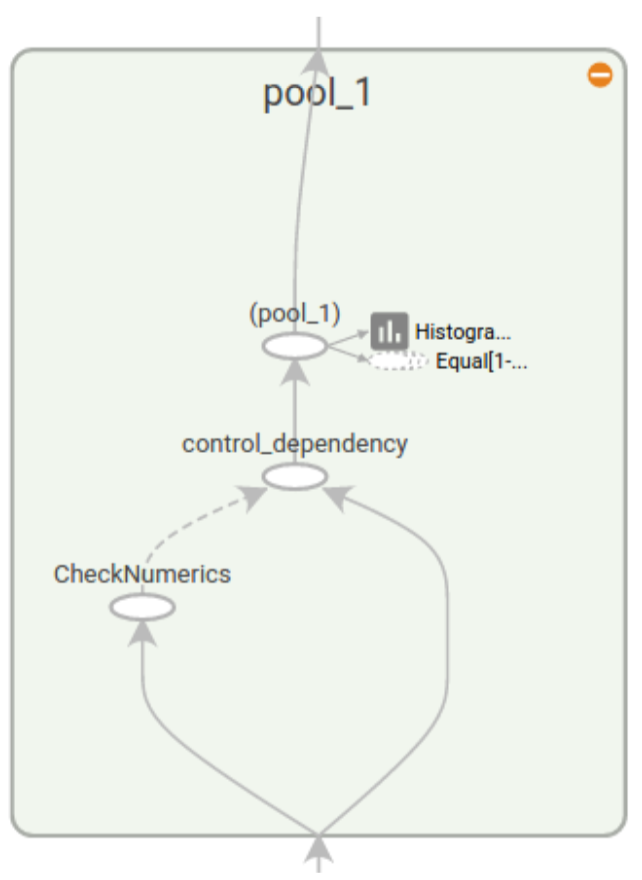

1 综述
• 使用图 (graph) 来表示计算任务.
• 在被称之为会话（Session）的上下文 (context) 中执行图.
• 使用 tensor 表示数据.
• 通过变量（Variable）维护状态.
• 使用 feed 和 fetch 可以为任意的操作(arbitrary operation) 赋值或者从其中获取数据.
一个 TensorFlow 图描述了计算的过程. 为了进行计算, 图必须在Session里被启动. 将图的 op 分发到诸如 CPU 或 GPU 之类的设备上, 同时提供执行 op 的方法. 这些方法执行后, 将产生的 tensor 返回. 在 Python 语言中, 返回的 tensor 是 numpy ndarray对象; 在 C 和 C++ 语言中, 返回的 tensor 是tensorflow::Tensor 实例.
2 基本概念
2.1 计算图
TensorFlow 程序通常被组织成一个构建阶段和一个执行阶段. 在构建阶段, op 的执行步骤 被描述成一个图. 在执行阶段, 使用会话执行执行图中的 op.通常在构建阶段创建一个图来表示和训练神经网络, 然后在执行阶段反复执行图中的训练 op.
2.1.1 构建图
构建图的第一步, 是创建源 op (source op). 源 op 不需要任何输入, 例如 常量 (Constant) . 源 op 的输出被传递给其它 op 做运算.
为了真正进行运算, 并得到运算的结果, 你必须在会话里启动这个图.
2.1.2 在一个会话中启动图
构造阶段完成后, 才能启动图. 启动图的第一步是创建一个 Session 对象, 如果无任何创建参数, 会话构造器将启动默认图.
1 | sess = tf.Session() |
Session 对象在使用完后需要关闭以释放资源. 除了显式调用 close 外, 也可以使用 “with” 代码块 来自动完成关闭动作.
1 | with tf.Session() as sess: |
在实现上, TensorFlow 将图形定义转换成分布式执行的操作, 以充分利用可用的计算资源(如 CPU 或 GPU). 一般你不需要显式指定使用 CPU 还是 GPU, TensorFlow 能自动检测. 如果检测到 GPU, TensorFlow 会尽可能地利用找到的第一个 GPU 来执行操作.
如果机器上有超过一个可用的 GPU, 除第一个外的其它 GPU 默认是不参与计算的. 为了让 TensorFlow 使用这些GPU, 你必须将 op 明确指派给它们执行.with…Device 语句用来指派特定的 CPU 或 GPU 执行操作:
1 | with tf.Session() as sess: |
设备用字符串进行标识. 目前支持的设备包括:
- “/cpu:0” : 机器的 CPU.
- “/gpu:0” : 机器的第一个 GPU, 如果有的话.
- “/gpu:1” : 机器的第二个 GPU, 以此类推.
2.2 Tensor
TensorFlow 程序使用 tensor 数据结构来代表所有的数据, 计算图中, 操作间传递的数据都是 tensor. 你可以把 TensorFlow tensor 看作是一个 n 维的数组或列表. 一个 tensor 包含一个静态类型 rank, 和 一个 shape.
2.3 变量
变量维护图执行过程中的状态信息.通常会将一个统计模型中的参数表示为一组变量. 例如, 你可以将一个神经网络的权重作为某个变量存储在一个tensor 中. 在训练过程中, 通过重复运行训练图, 更新这个 tensor.
2.4 Fetch
为了取回操作的输出内容, 可以在使用 Session 对象的 run()调用 执行图时, 传入一些 tensor, 这些 tensor 会帮助你取回结果. 在之前的例子里, 我们只取回了单个节点 state , 但是你也可以取回多个 tensor。需要获取的多个 tensor 值，在 op 的一次运行中一起获得(而不是逐个去获取 tensor)。
1 | result = sess.run([mul, intermed]) |
2.5 Feed
上述示例在计算图中引入了 tensor, 以常量或变量的形式存储. TensorFlow 还提供了 feed 机制, 该机制 可以 临时替代图中的任意操作中的 tensor 可以对图中任何操作提交补丁, 直接插入一个 tensor.
feed 使用一个 tensor 值临时替换一个操作的输出结果. 你可以提供 feed 数据作为 run()调用的参数. feed 只在调用它的方法内有效, 方法结束, feed 就会消失. 最常见的用例是将某些特殊的操作指定为 “feed” 操作, 标记的方法是使用 tf.placeholder()为这些操作创建占位符.
3 运作方式
3.1 变量：创建、初始化、保存和加载
当训练模型时，用变量来存储和更新参数。变量包含张量 (Tensor)存放于内存的缓存区。建模时它们需要被明确地初始化，模型训练后它们必须被存储到磁盘。这些变量的值可在之后模型训练和分析是被加载。
3.1.1 创建
当创建一个变量时，你将一个 张量 作为初始值传入构造函数 Variable()。TensorFlow提供了一系列操作符来初始化张量，初始值是常量或是随机值。
注意，所有这些操作符都需要你指定张量的shape。那个形状自动成为变量的shape。变量的shape通常是固定的。
1 | # Create two variables. |
调用tf.Variable()添加一些操作(Op, operation)到graph:
• 一个 操作存放变量的值。
• 一个初始化op将变量设置为初始值。这事实上是一个 操作.
• 初始值的操作，例如示例中对 变量的 操作也被加入了graph。
tf.Variable()的返回值是Python的 类的一个实例。
3.1.2 初始化
变量的初始化必须在模型的其它操作运行之前先明确地完成。最简单的方法就是添加一个给所有变量初始化的操作，并在使用模型之前首先运行那个操作。
使用 tf.initialize_all_variables()添加一个操作对变量做初始化。记得在完全构建好模型并加载之后再运行那个操作。
1 | # Create two variables. |
由另一个变量初始化
你有时候会需要用另一个变量的初始化值给当前变量初始化。由于tf.initialize_all_variables()是并行地初始 化所有变量，所以在有这种需求的情况下需要小心。
用其它变量的值初始化一个新的变量时，使用其它变量的initialized_value()属性。你可以直接把已初始化的值作为新变量的初始值，或者把它当做tensor计算得到一个值赋予新变量。
1 | # Create a variable with a random value. |
自定义初始化
tf.initialize_all_variables() 函数便捷地添加一个op来初始化模型的所有变量。你也可以给它传入一组变量进行初始化。
3.1.3 保存和加载
最简单的保存和恢复模型的方法是使用 tf.train.Saver 对象。构造器给graph的所有变量，或是定义在列表里的变量，添加 save 和 restore ops。saver对象提供了方法来运行这些ops，定义检查点文件的读写路径。
检查点文件ckpt
变量存储在二进制文件里，主要包含从变量名到tensor值的映射关系。
当你创建一个 Saver 对象时，你可以选择性地为检查点文件中的变量挑选变量名。
保存变量
1 | # Create some variables. |
恢复变量
用同一个 Saver 对象来恢复变量。注意，当你从文件中恢复变量时，不需要事先对它们做初始化。
1 | # Create some variables. |
选择存储和恢复哪些变量
如果你不给 tf.train.Saver() 传入任何参数，那么saver将处理graph中的所有变量。其中每一个变量都以变量创 建时传入的名称被保存。
有时候在检查点文件中明确定义变量的名称很有用。举个例子，你也许已经训练得到了一个模型，其中有个变量 命名为 “weights” ，你想把它的值恢复到一个新的变量 “params” 中。
有时候仅保存和恢复模型的一部分变量很有用。再举个例子，你也许训练得到了一个5层神经网络，现在想训练一 个6层的新模型，可以将之前5层模型的参数导入到新模型的前5层中。
你可以通过给 tf.train.Saver() 构造函数传入Python字典，很容易地定义需要保持的变量及对应名称:键对应使 用的名称，值对应被管理的变量。
3.2 TensorBoard：可视化学习
3.2.1 数据序列化
TensorBoard 通过读取 TensorFlow 的事件文件来运行。TensorFlow 的事件文件包括了你会在 TensorFlow 运行中涉及到的主要数据。下面是 TensorBoard 中汇总数据(Summary data)的大体生命周期。
首先，创建你想汇总数据的 TensorFlow 图，然后再选择你想在哪个节点进行汇总(summary)操作。
比如，假设你正在训练一个卷积神经网络，用于识别 MNISt 标签。你可能希望记录学习速度(learning rate)如何变化，以及目标函数如何变化。通过向节点附加scalar_summary操作来分别输出学习速度和期望误差。然后你可以给每个 scalary_summary 分配一个有意义的 标签 ，比如 ‘learning rate’ 和 ‘loss function’ 。或者你还希望显示一个特殊层中激活的分布，或者梯度权重的分布。可以通过分别附加 histogram_summary 运算来收集权重变量和梯度输出。
在TensorFlow中，所有的操作只有当你执行，或者另一个操作依赖于它的输出时才会运行。我们刚才创建的这些 节点(summary nodes)都围绕着你的图像:没有任何操作依赖于它们的结果。因此，为了生成汇总信息，我们需 要运行所有这些节点。这样的手动工作是很乏味的，因此可以使用tf.merge_all_summaries来将他们合并为一个操作。
然后你可以执行合并命令，它会依据特点步骤将所有数据生成一个序列化的Summary protobuf对象。最后，为了 将汇总数据写入磁盘，需要将汇总的protobuf对象传递给tf.train.Summarywriter。
SummaryWriter 的构造函数中包含了参数 logdir。这个 logdir 非常重要，所有事件都会写到它所指的目录 下。此外， SummaryWriter 中还包含了一个可选择的参数 GraphDef 。如果输入了该参数，那么 TensorBoard 也会显示你的图像。
现在已经修改了你的图，也有了 SummaryWriter ，现在就可以运行你的神经网络了!如果你愿意的话，你可以每 一步执行一次合并汇总，这样你会得到一大堆训练数据。这很有可能超过了你想要的数据量。你也可以每一百步 执行一次合并汇总，或者如下面代码里示范的这样。
1 | merged_summary_op = tf.merge_all_summaries() |
现在已经准备好用 TensorBoard 来可视化这些数据了。
3.2.2 启动TensorBoard
在terminal中输入下面命令（log文件地址需填写准确）
1 | tensorboard --logdir=/path/to/log-directory |
3.2.3 名称域（Name Scoping）和节点（Node）
典型的 TensorFlow 可以有数以千计的节点，如此多而难以一下全部看到，甚至无法使用标准图表工具来展示。为简单起见，我们为变量名划定范围，并且可视化把该信息用于在图表中的节点上定义一个层级。默认情况下， 只有顶层节点会显示。下面这个例子使用 tf.name_scope在 hidden 命名域下定义了三个操作:
1 | import tensorflow as tf |
结果是得到了下面三个操作名:
• hidden/alpha
• hidden/weights
• hidden/biases
默认地，三个操作名会折叠为一个节点并标注为 hidden 。其额外细节并没有丢失，你可以双击，或点击右上方橙 色的 + 来展开节点，然后就会看到三个子节点 alpha ， weights 和 biases 了。

通过名称域把节点分组来得到可读性高的图表很关键的。如果你在构建一个模型，名称域就可以用来控制可视化结果。你的名称域越好，可视性就越好。
TensorFlow 图表有两种连接关系:数据依赖和控制依赖。数据依赖显示两个操作之间tensor流程，用实心箭头指示，而控制依赖用点线表示。
3.3 使用GPUs
3.3.1 支持的设备
在一套标准的系统上通常有多个计算设备. TensorFlow 支持 CPU 和 GPU 这两种设备. 我们用指定字符串来标识这些设备. 比如:
- “/cpu:0” : 机器中的 CPU
- “/gpu:0” : 机器中的 GPU, 如果你有一个的话.
- “/gpu:1” : 机器中的第二个 GPU, 以此类推…
如果一个 TensorFlow 的 operation 中兼有 CPU 和 GPU 的实现, 当这个算子被指派设备时, GPU 有优先权. 比 如 matmul 中 CPU 和 GPU kernel 函数都存在. 那么在 cpu:0 和 gpu:0 中, matmul operation 会被指派给 gpu:0 .
3.3.2 记录设备指派情况
为了获取你的 operations 和 Tensor 被指派到哪个设备上运行, 用 log_device_placement 新建一个 session , 并设置为 True .
1 | # 新建一个 graph. |
3.3.3 手工指派设备
如果你不想使用系统来为 operation 指派设备, 而是手工指派设备, 你可以用 with tf.device创建一个设备环境, 这个环境下的 operation 都统一运行在环境指定的设备上.
# 新建一个graph.
1 | with tf.device('/cpu:0'): |
你会发现现在 a 和 b 操作都被指派给了 cpu:0 .
3.3.4 在多GPU系统里使用单一GPU
如果你的系统里有多个 GPU, 那么 ID 最小的 GPU 会默认使用. 如果你想用别的 GPU, 可以用下面的方法显式的声明你的偏好:
# 新建一个 graph.
1 | with tf.device('/gpu:2'): |
3.3.5 使用多个GPU
如果你想让 TensorFlow 在多个 GPU 上运行, 你可以建立 multi-tower 结构, 在这个结构 里每个 tower 分别被指配给不同的 GPU 运行. 比如:
1 | # 新建一个 graph. |